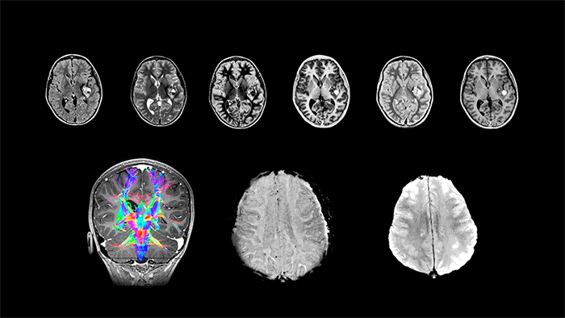

MRI Contrast#
MRI contrast is a rich dimension of information and the variety of contrasts achieveable is arguably the main advantage of MRI. This section introduces the fundamental techniques of T1, T2, and proton density weighted contrasts, inversion recovery, Gd-based contrast agents, and fat/water imaging.

% setup MRI-education-resources path and requirements
cd ../
startup
loading image
loading signal
Learning Goals#
Describe how various types of MRI contrast are created
Describe how T1, T2, and proton density weighted images are formed
Describe how inversion recovery works
Describe how Gd-based contrast agents work
Describe how fat/water imaging works
Identify various image contrasts
Manipulate MRI sequence parameters to improve performance
Choose flip angle, TE, TR, and TI for desired contrast
What determines T1 and T2 values?#
T1 and T2 are intrinsic properties of materials that are determined by the molecular environment and structure, and provide a significant sources of tissue contrast. While a precise understanding of what determines T1 and T2 requires quantum mechanics, typical patterns in these values can be described based on typical types of tissues found in the body. human tissues can be approximately be divided into 4 classes of tissues that have similar T1 and T2 values:
Liquids/fluids
Solids (e.g. Cortical bone, tendons, fibrosis)
Fat
Proteinaceous materials (e.g. internal organs)
T1#
T1 is also known as the spin-lattice relaxation time. T1 is determined by the exchange of energy between spins and the surrounding “lattice” - the molecular structure around the spins. The lattice is in constant motion, and will have characteristic motional frequencies. The most efficient transfer of energy occurs when the natural motional frequencies are near the Larmor frequency(\(f_0 = \bar{\gamma} B_0\)), and natural motional frequencies depend on physical states of tissues:
Liquids/fluids: Longer T1 due to higher natural motional frequencies of protons
Solids (e.g. Cortical bone, tendons, fibrosis): Intermediate T1 due to lower natural motional frequencies of protons
Fat (lipids): Shorter T1 since natural motion frequencies are similar to \(f_0\)
Proteinaceous materials (e.g. internal organs): Intermediate T1 due to lower natural motional frequencies of protons
Proteinaceous fluids (e.g. Edema): Shorter T1 since water protons lose freedom of motion due to macromolecules, so natural motion frequencies are similar to \(f_0\)
T2#
T2 is also known as the spin-spin relaxation time. T2 is determined by coupling between adjacent spins. This also includes the transfer of energy to the lattice that determines T1, meaning that T2 is always shorter that T1. Stronger coupling between spins leads to more microscopic dephasing and shorter T2 values.
Liquids/fluids: Longer T2 due to sparsity between water molecules and limited interaction between protons within a water molecule
Solids (e.g. Cortical bone, tendons, fibrosis): Shorter T2 due to strong, fixed spin-spin coupling
Fat (lipids): Intermediate T2 due to intermediate coupling
Proteinaceous materials (e.g. internal organs): Intermediate T2 due to intermediate coupling
T2*#
T2* is also a transverse decay time, and includes T2 as well as additional macroscopic dephasing due to local magnetic field inhomogeneities. This means \( T_2^* \leq T_2\). The microscopic dephasing (T2) cannot be refocused, but the macroscopic dephasing effects can be refocused by using a spin echo sequence. The macroscopic dephasing is caused by differences in magnetic susceptibility between materials and tissues.
While often the macroscopic dephasing effects creating T2* are often undesirable and considered artifacts, T2* is also an important source of contrast to reflect differences in magnetic susceptibility:
Iron deposition: The presence of iron in a tissue will create shorter T2* due to the strong magnetic susceptibility of iron.
Calcifications: The presence of calcium in a tissue will create shorter T2* due to the strong magnetic susceptibility of calcium.
Oxygenated vs deoxygenated blood: Deoxygenated blood will have shorter T2* than oxygenated blood due to the magnetic susceptibility of deoxygenated hemoglobin. This can be used for selectively imaging veins, and is also the basis of blood oxygen level dependent (BOLD) functional MRI.
Typical T1 and T2 values#
1.5 T#
Tissue |
T1 (ms) |
T2 (ms) |
|---|---|---|
Brain white matter |
790 |
90 |
Brain gray matter |
920 |
100 |
Cerebrospinal fluid (CSF) |
>4000 |
∼2000 |
Blood (arterial) |
1200 |
50 |
Liver parenchyma |
490 |
40 |
Lung |
830 |
80 |
Myocardium |
870 |
60 |
Skeletal muscle |
870 |
50 |
Lipids |
260 |
80 |
Source: Handbook of MRI Pulse Sequences
3 T#
Tissue |
T1 [ms] |
T2 [ms] |
|---|---|---|
White Matter |
800 |
110 |
Gray Matter |
1300 |
80 |
CSF |
3700 |
1700 |
Muscle |
1000 |
30 |
Fat |
400 |
100 |
Liver |
800 |
40 |
Cartilage |
1200 |
40 |
Sources: MRI from Picture to Proton, MRI: The Basics
TE and T2/T2*#
The transverse magnetization decays with \(T_2\) (spin-echoes) or \(T_2^*\) (gradient-echoes) once it is flipped by an RF pulse away from the z-axis. Therefore, the \(T_2/T_2^*\) contrast can be controlled by choosing the echo time (TE), which is the time between the center of the RF excitation pulse and the center of the data acquisition (when the center of k-space is acquired). The signal is then proportional to
% TE contrast
TE = linspace(0,200); % ms
T2v = [30;60;80;100;130;200];
[T2 TE] = meshgrid(T2v,TE);
M0 = ones(size(T2));
S_TE = M0.*exp(-TE./T2);
plot(TE,S_TE)
xlabel('TE (ms)'), ylabel('signal')
legend(int2str(T2v))
title('Signal versus TE for various T_2 values')
TE = linspace(0,200); % ms
T2 = linspace(1,150); % ms
[T2 TE] = meshgrid(T2,TE);
M0 = ones(size(T2));
S_TE = M0 .* exp(-TE./T2);
figure
mesh(T2,TE,S_TE)
view([155 30])
ylabel('TE (ms)'), xlabel('T_2 (ms)'), zlabel('signal')
colorbar
TR and T1#
The longitudinal magnetization recovers with \(T_1\) back to its equilibrium amplitude, \(M_0\). However, we do not directly measure the longitudinal magnetization. In order to create \(T_1\) contrast in the MR signal, repeated RF pulses are applied with a given repetition time (TR), such that there is incomplete recovery of the longitudinal magnetization. Then, after excitation, incomplete recovery appears in the transverse magnetization, creating \(T_1\) contrast.
90-degree flip angles#
The simplest case is using 90-degree flip angles every TR, in which case
Illustrated in the first example below. This shows that the magnetization reaches steady state in the 2nd TR.
< 90-degree flip angles#
For T1-weighting, it is generally more efficient in terms of signal acqruied per time to use < 90-degree flip angles every TR, in which case
Illustrated in this second example below. This shows that the magnetization can take many TRs to reach steady state.
% Signal evolution between TRs with 90-degree pulses
M0 = [1;1;1;1];
T1 = [400; 800; 1200; 2000]; %linspace(200,2000)'; % ms
NTR = 8;
flip = 90;
TR = 500; %ms
Nt_per_TR = 100;
t_per_TR = [1:Nt_per_TR]*TR/Nt_per_TR;
t_minus = [0:NTR]*TR; t_plus = t_minus + 1;
% magnetization before each RF pulse
Mz_minus = zeros(length(T1), NTR+1);
% magnetization after each RF pulse
Mz_plus = zeros(length(T1), NTR+1);
% initial condition
Mz_minus(:,1) = M0;
Mz_plus(:,1) = Mz_minus(:,1)*cos(flip*pi/180);
t = [0 eps];
Mz_all = [Mz_minus(:,1),Mz_plus(:,1)];
for I = 1:NTR
t = [t, t_per_TR + (I-1)*TR];
for It = 1:Nt_per_TR
Mz_all = [Mz_all, Mz_plus(:,I).*exp(-t_per_TR(It)./T1) + M0.*(1-exp(-t_per_TR(It)./T1))];
end
Mz_minus(:,I+1) = Mz_plus(:,I).*exp(-TR./T1) + M0.*(1-exp(-TR./T1));
Mz_plus(:,I+1) = Mz_minus(:,I+1).*cos(flip*pi/180);
end
plot(t, Mz_all, t_minus, Mz_minus, 'x', t_plus, Mz_plus,'o')
legend(int2str(T1))
xlabel('time (ms)'), ylabel('M_Z')
title([num2str(flip) '-degree RF pulses applied every ' num2str(TR) ' ms'])
% TR contrast with T1
TR = linspace(0,2000); % ms
T1v = [400; 800; 1200; 2000]; %linspace(200,2000)'; % ms
[T1 TR] = meshgrid(T1v,TR);
M0 = ones(size(T1));
S_TR = M0.*(1-exp(-TR./T1));
plot(TR,S_TR)
xlabel('TR (ms)'), ylabel('signal')
legend(int2str(T1v))
title(['Signal versus TR for various T_1 values with ' num2str(flip) '-degree flip'])
TR = linspace(0,2000); % ms
T1 = linspace(400,2500); % ms
[T1 TR] = meshgrid(T1,TR);
M0 = ones(size(T1));
S_TR = M0 .* (1-exp(-TR./T1));
figure
mesh(T1,TR,S_TR)
view([110 30])
ylabel('TR (ms)'), xlabel('T_1 (ms)'), zlabel('signal')
colorbar
% Signal evolution between TRs with <90-degree pulses
M0 = [1;1;1;1];
T1 = [400; 800; 1200; 2000]; %linspace(200,2000)'; % ms
NTR = 30;
flip = 30;
TR = 100; %ms
Nt_per_TR = 100;
t_per_TR = [1:Nt_per_TR]*TR/Nt_per_TR;
t_minus = [0:NTR]*TR; t_plus = t_minus + 1;
% magnetization before each RF pulse
Mz_minus = zeros(length(T1), NTR+1);
% magnetization after each RF pulse
Mz_plus = zeros(length(T1), NTR+1);
% initial condition
Mz_minus(:,1) = M0;
Mz_plus(:,1) = Mz_minus(:,1)*cos(flip*pi/180);
t = [0 eps];
Mz_all = [Mz_minus(:,1),Mz_plus(:,1)];
for I = 1:NTR
t = [t, t_per_TR + (I-1)*TR];
for It = 1:Nt_per_TR
Mz_all = [Mz_all, Mz_plus(:,I).*exp(-t_per_TR(It)./T1) + M0.*(1-exp(-t_per_TR(It)./T1))];
end
Mz_minus(:,I+1) = Mz_plus(:,I).*exp(-TR./T1) + M0.*(1-exp(-TR./T1));
Mz_plus(:,I+1) = Mz_minus(:,I+1).*cos(flip*pi/180);
end
plot(t, Mz_all, t_minus, Mz_minus, 'x', t_plus, Mz_plus,'o')
legend(int2str(T1))
xlabel('time (ms)'), ylabel('M_Z')
title([num2str(flip) '-degree RF pulses applied every ' num2str(TR) ' ms'])
% TR and flip angle contrast with T1
flip = 30; % degrees
TR = linspace(0,2000); % ms
T1v = [400; 800; 1200; 2000]; %linspace(200,2000)'; % ms
[T1 TR] = meshgrid(T1v,TR);
M0 = ones(size(T1));
S_TR = sin(flip*pi/180) .* M0 .* (1-exp(-TR./T1)) ./ (1-cos(flip*pi/180).*exp(-TR./T1));
plot(TR,S_TR)
xlabel('TR (ms)'), ylabel('signal')
legend(int2str(T1v))
title(['Signal versus TR for various T_1 values with ' num2str(flip) '-degree flip'])
TR = linspace(0,2000); % ms
T1 = linspace(400,2500); % ms
[T1 TR] = meshgrid(T1,TR);
M0 = ones(size(T1));
S_TR = sin(flip*pi/180) .* M0 .* (1-exp(-TR./T1)) ./ (1-cos(flip*pi/180).*exp(-TR./T1));
figure
mesh(T1,TR,S_TR)
view([110 30])
ylabel('TR (ms)'), xlabel('T_1 (ms)'), zlabel('signal')
title([ num2str(flip) '-degree flip'])
colorbar
TR = 100;
flip = linspace(0,90); % degrees
T1v = [400; 800; 1200; 2000]; %linspace(200,2000)'; % ms
[T1 flip] = meshgrid(T1v,flip);
M0 = ones(size(T1));
S_flip = sin(flip*pi/180) .* M0 .* (1-exp(-TR./T1)) ./ (1-cos(flip*pi/180).*exp(-TR./T1));
figure
plot(flip,S_flip)
xlabel('flip angle (degrees)'), ylabel('signal')
legend(int2str(T1v))
title(['Signal versus flip angles for various T_1 values with TR = ' num2str(TR) ' ms'])
flip = linspace(0,90); % degrees
T1 = linspace(400,2500); % ms
[T1 flip] = meshgrid(T1,flip);
M0 = ones(size(T1));
S_flip = sin(flip*pi/180) .* M0 .* (1-exp(-TR./T1)) ./ (1-cos(flip*pi/180).*exp(-TR./T1));
figure
mesh(T1,flip,S_flip)
view([110 30])
xlabel('flip angle (degrees)'), xlabel('T_1 (ms)'), zlabel('signal')
title(['TR = ' num2str(TR) ' ms'])
colorbar
T1, T2 and Proton Density Weighting#
By choosing the TE, TR and flip angle values in our pulse sequences and the relationships described above, we can create images that “weighted” by the MR properties of T1, T2, and proton density. This means that the resulting images will have contrast between tissues that have different T1, T2 or proton density.
Short TE |
Long TE |
|
|---|---|---|
Short TR |
T1-weighted |
Not used |
Long TR |
PD-weighted |
T2/T2*-weighted |
T2-weighting and T2*-weighting#
To create T2 weighting, the TE is chosen to be long enough such that the there are different amounts of transverse magnetization depending on the T2 value. For example, at TE = 80 ms we can expect to see good contrast between white matter (\(T_2 \approx 60\) ms), gray matter (\(T_2 \approx 80\) ms), and cerebrospinal fluid (\(T_2 \approx 1500\) ms) in the brain (see simulations above).
The TR is chosen to be long relative to T1 values. This allows the net magnetization to fully recover each repetition, and thereby eliminating any T1-weighting.
In T2/T2* weighting, longer T2/T2* tissues have higher signal than shorter T2/T2* tissues.
The difference between \(T_2\) and \(T_2^*\) weighting depends on the choice of pulse sequence: \(T_2\)-weighting comes from spin-echoes while \(T_2^*\)-weighting comes from gradient-echoes. These are discussed later. The same principle applies of choosing a long enough TE, and a long TR.
T1-weighting#
To create T1 weighting, the TR is chosen to be short enough such that there is incomplete recovery of the net magnetization each repetition. This means that the signal acquired will depend on T1. For example. choosing a TR = 500 ms with a 90-degree flip angle we can expect to see contrast between fat (\(T_1 \approx 400\) ms) and muscle (\(T_1 \approx 1200\) ms) (see simulations above).
For T1-weighting, we also can use smaller flip angles and smaller TRs to boost the overall signal. For example. choosing a TR = 200 ms with a 30-degree flip angle we can expect to see contrast between fat (\(T_1 \approx 400\) ms) and muscle (\(T_1 \approx 1200\) ms) but more overall signal (see simulations above).
The TE is chosen to be short relative to T2 values. This reduces T2-weighting.
In T1 weighting, shorter T1 tissues have higher signal than longer T1 tissues.
PD-weighting#
To create proton density (PD) weighting, we choose a short TE to reduce T2-weighting and a long TR to reduce T1-weighting. This leaves the image contrast dependent on the proton density, which is captured in the equilibrium magnetization, \(M_0\).
In PD weighting, higher PD tissues have higher signal than lower PD tissues.
Proton-density weighting can be achieved with short TRs when using very small flip angles. This weighting applies up to a certain \(TR/T_1\) ratio. This can be seen in the following by zooming in on the low flip angle area from the plots above and noting that there is no difference between the signal for different \(T_1\) values, meaning the T1-weighting has been removed.
TR = 10;
flip = linspace(0,10); % degrees
T1v = [400; 800; 1200; 2000]; %linspace(200,2000)'; % ms
[T1 flip] = meshgrid(T1v,flip);
M0 = ones(size(T1));
S_flip = sin(flip*pi/180) .* M0 .* (1-exp(-TR./T1)) ./ (1-cos(flip*pi/180).*exp(-TR./T1));
figure
plot(flip,S_flip)
xlabel('flip angle (degrees)'), ylabel('signal')
legend(int2str(T1v))
title(['Signal versus flip angles for various T_1 values with TR = ' num2str(TR) ' ms'])
flip = linspace(0,10); % degrees
T1 = linspace(400,2500); % ms
[T1 flip] = meshgrid(T1,flip);
M0 = ones(size(T1));
S_flip = sin(flip*pi/180) .* M0 .* (1-exp(-TR./T1)) ./ (1-cos(flip*pi/180).*exp(-TR./T1));
figure
mesh(T1,flip,S_flip)
view([110 30])
xlabel('flip angle (degrees)'), xlabel('T_1 (ms)'), zlabel('signal')
title(['TR = ' num2str(TR) ' ms'])
colorbar
Inversion Recovery#
Another way to create \(T_1\) contrast are “Inversion Recovery” techniques. These use a 180-degree inversion pulse, following by an Inversion Time \(TI\) delay during which \(T_1\) contrast is created. Then the magnetization is excited with a 90-degree pulse.
This strategy is commonly used to null tissue types. For example, so-called short-time inversion recovery (STIR) is used to null fat signals, while fluid attenuated inversion recovery (FLAIR) is used to null fluids.
The illustration below shows that the magnetization reaches steady state in the 2nd TR of inversion recovery.
% Inversion Recovery
T1 = [400; 800; 1200; 2000];
M0 = [1;1;1;1];
NTR = 3;
flip1 = 180; flip2 = 90;
TR = 2000; %ms
TI = 750; % ms
dt = 5; % ms
t_per_TR = dt:dt:TR;
% magnetization before each RF pulse
Mz1_minus = zeros(length(T1), NTR+1);
Mz2_minus = zeros(length(T1), NTR);
% magnetization after each RF pulse
Mz1_plus = zeros(length(T1), NTR+1);
Mz2_plus = zeros(length(T1), NTR);
% time of RF pulses
t1_minus = [0:NTR]*TR; t1_plus = t1_minus + 1; % flip1, 180-degrees
t2_minus = t1_minus(1:end-1)+TI; t2_plus = t1_plus(1:end-1) + TI;
% initial condition
Mz1_minus(:,1) = M0;
Mz1_plus(:,1) = Mz1_minus(:,1)*cos(flip1*pi/180);
Mz_all = [Mz1_minus(:,1),Mz1_plus(:,1)];
t= [0, eps];
for I = 1:NTR
t = [t, t_per_TR + (I-1)*TR];
% evolve for TI period after 180-pulse
for It = find(t_per_TR < TI)
Mz_all = [Mz_all, Mz1_plus(:,I).*exp(-t_per_TR(It)./T1) + M0.*(1-exp(-t_per_TR(It)./T1))];
end
Mz2_minus(:,I) = Mz1_plus(:,I).*exp(-TI./T1) + M0.*(1-exp(-TI./T1));
Mz2_plus(:,I) = Mz2_minus(:,I).*cos(flip2*pi/180);
for It = find(t_per_TR >= TI)
Mz_all = [Mz_all, Mz2_plus(:,I).*exp(-(t_per_TR(It)-TI)./T1) + M0.*(1-exp(-(t_per_TR(It)-TI)./T1))];
end
Mz1_minus(:,I+1) = Mz2_plus(:,I).*exp(-(TR-TI)./T1) + M0.*(1-exp(-(TR-TI)./T1));
Mz1_plus(:,I+1) = Mz1_minus(:,I+1).*cos(flip1*pi/180);
end
plot(t, Mz_all, t1_minus, Mz1_minus.', 'x', t1_plus, Mz1_plus.','o', t2_minus, Mz2_minus, 'x', t2_plus, Mz2_plus,'o')
legend(int2str(T1))
xlabel('time (ms)'), ylabel('M_Z');
t1_plus =
1 2001 4001 6001
t2_plus =
751 2751 4751
% Inversion Recovery, TI vs T1
TR = 2000; % ms
TI = linspace(0,2000); % ms
T1v = [400; 800; 1200; 2000]; %linspace(200,2000)'; % ms
[T1 TI] = meshgrid(T1v,TI);
M0 = ones(size(T1));
S_TI = M0.*(1 - 2*exp(-TI./T1) + exp(-TR./T1));
plot(TI,S_TI)
xlabel('TI (ms)'), ylabel('signal')
legend(int2str(T1v))
title(['Signal versus TI for various T_1 values with TR = ' num2str(TR) ' ms'])
TR = 2000;
TI = linspace(0,2000); % ms
T1 = linspace(400,2500); % ms
[T1 TI] = meshgrid(T1,TI);
M0 = ones(size(T1));
S_TI = M0.*(1 - 2*exp(-TI./T1) + exp(-TR./T1));
figure
mesh(T1,TI,S_TI)
view([110 30])
ylabel('TI (ms)'), xlabel('T_1 (ms)'), zlabel('signal')
colorbar
Contrast Agents#
Contrast agents used in MRI, such as gadolinium chelates and superparamagnetic iron oxides, shorten the relaxation rates wherever they are present. This is quantified by their relaxivities, \(r_1, r_2\), typiclaly in units of [L / (mmol s)]:
Where \(\hat{T}_1, \hat{T}_2\) are the relaxation time constants with the agent present, and \([CM]\) is the contrast agent concentration, typically in units of [mM = mmol/L].